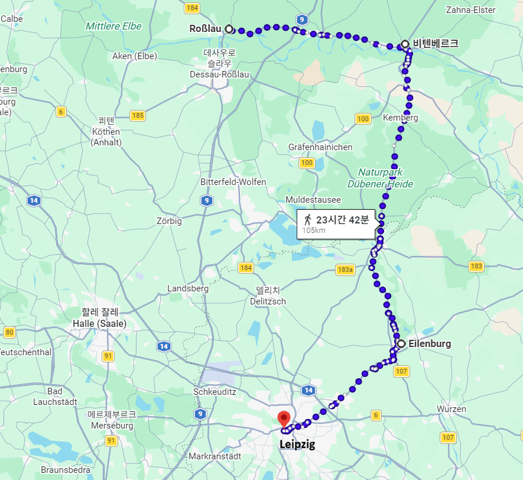
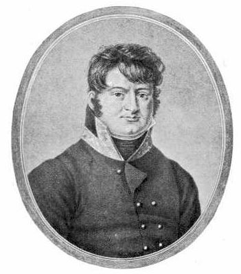
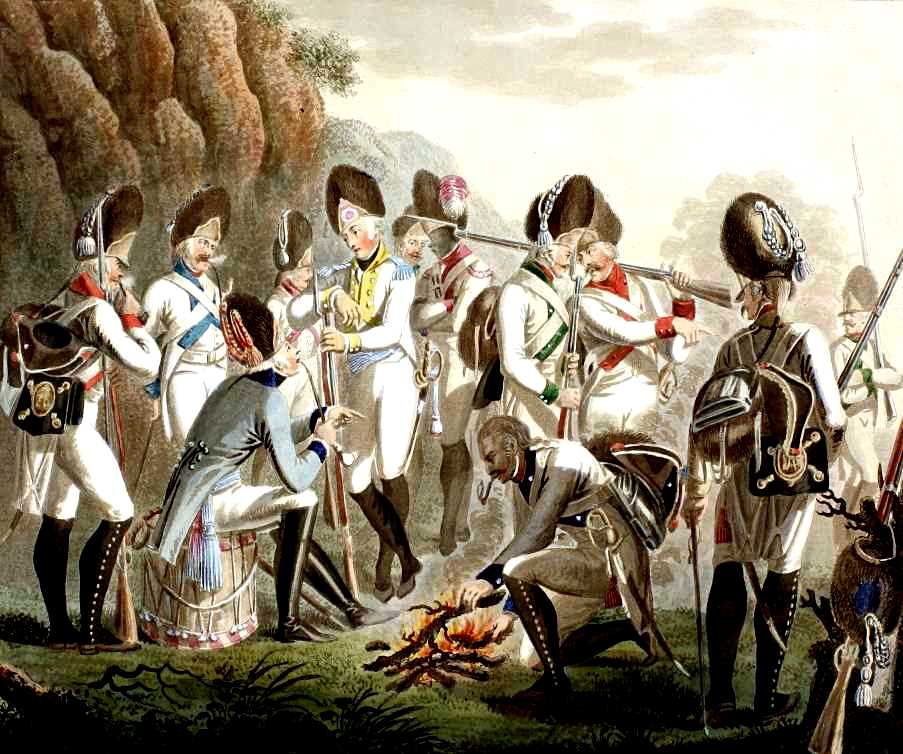
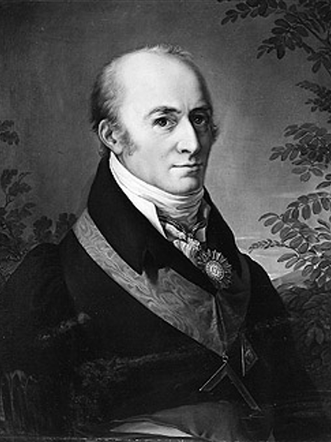
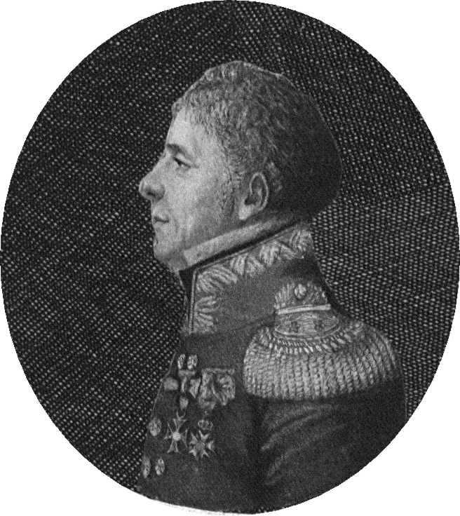

라이프치히 전투 (33) - 작센인들의 결단
게시: 2026-02-02T06:30:27+09:00
레이니에의 제7군단은 베르나도트를 놓친 김에 베를린으로 가겠다는 나폴레옹의 즉흥적인 결정 탓에 엘베강을 건너 로슬라우(Rosslau)까지 갔었기 때문에, 라이프치히에 가장 늦게, 바로 그 전날인 10월 17일 오후 늦게서야 도착한 부대였습니다. 당연히 이들은 매우 지친 상태였는데, 이들에게 주어진 임무는 파운스도르프를 지키는 것이었습니다. 이 곳은 북서쪽에서 쳐들어오는 블뤼허와 동쪽에서 쳐들어올 베니히센의 딱 중간 지점으로서, 어떻게 생각하면 당일 전선 중에서 전투가 가장 느슨할 것 같은 지점이었습니다. 물론 나폴레옹이 레이니에를 거기에 배치한 것은 제7군단이 지친 몸이라는 것을 배려한 것은 아니었고, 그냥 그들의 위치가 마침 거기였기 때문이었을 뿐이었습니다. 그리고 나폴레옹은 그쪽으로 베르나도트의 공격이 집중될 것이라는 예상은 하지 못했습니다.

(레이니에의 제7군단이 지난 4일 동안 걸어야 했던 거리입니다. 나폴레옹이 배신자 베르나도트에게 쓴 맛을 보여주겠다는 집착에 사로잡히지 않았다면 레이니에가 저 고생을 하지는 않았을 것이고, 당연히 10월 16일의 제1일차 전투에도 참전할 수 있었을 것입니다. 그랬다면, 어쩌면 제1일차 전투에서 승부가 결정나서 나폴레옹이 승리할 수도 있었을 것입니다.) 레이니에는 10월 18일 아침을 그리 나쁘지 않게 시작했습니다. 파운스도르프에 베니히센 휘하 부브나의 오스트리아군이 나타나기는 했으나, 숫자가 많지 않았습니다. 레이니에의 제7군단은 2개 프랑스 사단과 1개 작센 사단, 그리고 1개 작센 기병여단으로 구성되어 있었습니다. 레이니에는 그 중에서도 작센 사단을 파운스도르프 안에 배치해놓고 있었습니다. 나쁘게 생각하면 그들을 총알받이로 전면에 내세운 것이었고, 좋게 생각하면 준비해놓은 필살기 작전을 수행하기 위해서는 믿을 수 있는 프랑스 사단을 예비대로 빼두어야 했기 때문이었습니다. 즉, 부브나의 오스트리아군이 파운스도르프를 점령하기 위해 작센 사단과 치열하게 싸우는 동안, 파운스도르프 후방에 있던 뒤뤼트(Durutte)의 프랑스 사단을 우회시켜 부브나의 우측면에 돌입하도록 한 것입니다.

(흔히 부브나로 불리지만 그의 전체 이름은 부브나 폰 리티츠(Ferdinand, Graf Bubna von Littitz)로서, 원래 그는 체코 사람이라서 스펠링을 Bubna z Litic로 쓰기도 합니다. 그는 의외로 스위스의 역사에서 큰 역할을 했는데, 원래 제네바(Geneva)를 포함한 보(Vaud), 발레(Valais) 등의 지역은 스위스가 아니라 사보이(Savoy) 공국과 더 인연이 깊은 지역으로서, 제네바 공화국으로 존재했었습니다. 그러다 나폴레옹의 프랑스에 병합되었다가 나폴레옹이 몰락하면서 제네바에도 연합군이 진주했고, 덕분에 프랑스에서 벗어나 일단 다시 제네바 공화국으로 독립할 수 있었습니다. 그때 제네바에 진주한 부대의 사령관이 부브나였습니다. 그 일대의 지정학적 위치와 주민들의 정서를 살펴본 부브나의 제안에 따라 제네바 공화국이 스위스 연방에 가입하면서 오늘날의 스위스가 완성된 것입니다.) 이 작전은 대성공을 거두는 듯 했습니다. 허를 찔린 부브나는 버티지 못하고 패주하기 일보직전이었습니다. 그러나 뜻하지 않게 북쪽에서 뷜로의 프로이센군이 나타나면서 일이 헝클어지기 시작했습니다. 포병대의 맹렬한 포격을 등에 입은 프로이센군의 공격도 견디기 어려웠지만, 처음 보는 콘크리브 로켓의 요란한 공격은 그렇잖아도 혼란에 빠진 프랑스군의 사기를 완전히 꺾어놓았습니다. 이들은 무질서하게 패주했고, 영국 로켓 여단은 이들이 로켓에 혼쭐이 나고는 기가 꺾여 영국군에게 항복했다고 추후에 주장했습니다. 그러나 상식적으로 무질서하게 패주하는 수천 명의 병사들이, 도망치다 말고 되돌아서서 아까 자신들에게 로켓을 발사한 200명 남짓한 부대를 기어이 찾아낸 뒤 그 부대에게 항복했을 리는 없습니다. 연합군에게 항복한 것은 애초에 로켓의 쓴 맛을 제대로 본 뒤뤼트의 프랑스 사단이 아니었습니다. 파운스도르프 마을 내에서 뒤뤼트 사단의 패주를 지켜본 작센 사단이었습니다. 나폴레옹의 라인연방 소속국 중 본질적으로 가장 가까운 맹방은 오스트리아의 영향력에서 벗어나고자 하는데다 계몽주의에 심취한 군주와 총리를 앞세워 근대적 입헌군주제를 추구하던 바이에른이었습니다. 그에 비하면 작센은 프로이센과는 좋은 사이가 아니었으나 오스트리아와는 꽤 가까운 편이었고, 애초에 프랑스 대혁명의 대의에 별 공감도 없던 나라였습니다. 그래서 1806~7년에는 프로이센 편에서 나폴레옹과 싸웠다가, 그 이후에 반강제로 라인연방에 편입된 바 있었습니다. 특히 바로 직전인 8월 말 드레스덴 전투 이후, 나폴레옹의 그랑다르메가 주민들로부터 혹독한 식량 징발을 하며 작센에 장기간 주둔한 것이 작센 사람들의 반나폴레옹 정서를 크게 자극했습니다. 원래 보고 싶던 손주들이 오랜만에 와서 반갑다가도 이틀 지나면 '얘들이 언제 집에 가려나'라며 지겨워지는 것이 사람입니다. 하물며 굶주린 병사들 20만 명이 장기 주둔하면서 더 많은 적군을 자기 영토로 끌어들이는 것이 반가울 리가 없었습니다.

(어떻게 보면 작센군처럼 불쌍한 군대가 없습니다. 프랑스 편에서 싸웠던 바그람 전투 때도 그 흰 군복 때문에 오스트리아군으로 오해받아, 오스트리아군은 물론 프랑스군으로부터도 사격을 받는 신세가 되기도 했습니다. 이 그림은 작센군의 정예인 척탄병들의 모습입니다.) 이런 정서는 레이니에의 제7군단 소속 작센군도 그대로 공유하고 있었습니다. 이들은 가뜩이나 나폴레옹과 프랑스군의 횡포에 반감을 가지고 있었는데, 그로스베어런 전투 및 덴너비츠 전투에서의 연전연패로 많은 희생자를 내어 사기도 떨어진 상태였습니다. 그런 이들의 눈 앞에 펼쳐진, 프로이센군에게 패배한 뒤뤼트의 프랑스 사단이 무질서하게 후퇴하는 모습은 '왜 우리가 저들의 패배를 함께 해야 하는가' 하는 회의감을 주기에 충분했습니다. 이미 대세는 기울었는데 계속 싸우는 것은 아무 의미도 없는 개죽음이라는 생각에 병사들과 부사관들이 웅성거리고 중위 대위 등의 하급 장교들까지 동조하자, 고위 장교들도 할 수 있는 것이 많지 않았습니다. 단체 망명의 계기가 된 것은 레이니에의 후퇴 명령이었습니다. 파운스도르프를 지키기 어렵게 되었다고 판단한 레이니에는 더 서쪽의 젤러하우젠(Sellerhausen)으로 후퇴하라고 작센 사단에게도 명령을 내렸는데, 작센 사단의 장교들과 병사들은 이때가 마지막 기회라고 판단했습니다. 이들은 레이니에의 명령과는 정반대로, 연합군 쪽을 향하여 똑바로 나아갔습니다. 먼저 포병대가 달려나갔고, 이어서 보병 제1여단, 이어서 제2여단이 차례로 연합군쪽으로 나아갔습니다. 그 전체 규모는 약 3천 명의 병력과 19문의 포병대였습니다. 아무도 이들이 연합군 쪽으로 가는 이유가 단체 망명을 위해서라고는 생각하지 않았습니다. 근처에서 중기병 여단을 이끌고 후퇴하려던 악사미토프스키(Vincent Axamitowski) 장군도 이들의 모습을 보고는 당연히 적군과 싸우려고 한다고 생각하고는, 이들과 함께 싸우려고 후퇴를 멈추고 말머리를 돌릴 정도였습니다. 가장 놀란 사람은 작센 사단의 사단장이었던 제샤우(Heinrich Wilhelm von Zeschau) 장군이었습니다. 당시 제샤우 장군이 거느리고 있떤 이 작센 사단은 바로 1달 전에 작센 전체의 야전군 병력을 탈탈 털어서 새로 편성하여 제7군단에 편입시킨 부대로서, 그야말로 남아 있는 작센 야전군 전체였습니다. 그런 사단 전체가 자신이 후퇴를 명했는데 똑바로 적군을 향해 진격한다? 이건 자신의 명령을 잘못 전달된 것이라고 판단한 제샤우는 대경실색하여 허겁지겁 제2여단장 곁으로 말을 달렸습니다. 그러나 여단장 뤼셀(Gustav Xaver Reinhold von Ryssel)은 차갑게 자신들은 연합군 측으로 전향하기 위해 가는 것이라고 제샤우에게 말했습니다.

(제샤우 장군입니다. 그러니까 작센 사단의 단체 망명은 여단장 레벨에서 이루어진 것이었고, 작센 국왕은 물론 그 사단장 제샤우 장군과도 전혀 사전 협의가 된 것이 아니었습니다. 제샤우 장군은 휘하 사단이 통째로 적군에 가담한 이후, 라이프치히 시내에 있던 작센 국왕을 찾아갔습니다. 여기서 그는 작센 국왕과 함께 연합군의 포로가 되어 베를린으로 나란히 끌려갑니다.)

(뱅상 악사미토프스키 장군입니다. 이름에서 알 수 있듯이, 그는 원래 프랑스인이 아니라 폴란드인으로서 프랑스군에 임관된 사람이었습니다. 그의 부대는 이때 연합군을 향해 진격(?)하는 작센 사단 옆까지 말을 달려와 그 옆에서 Vive l'Empereur! (황제 폐하 만세)를 외쳤는데, 아마 작센 병사들로서는 '뭐래?'라며 매우 황당했을 것이고 악사미토포스키도 상황을 파악하고는 굉장히 뻘쯤했을 것 같습니다.)
여러분이 제샤우 장군이라면 이런 상황에서 어떻게 하시겠습니까? 부하들의 뜻을 존중하여 꼭 살아남아 작센을 재건하라고 남자답게 돌아서시겠습니까? 삶은 그렇게 멋으로만 살 수 있는 것이 아닙니다. 당장 자신에게 돌아올 문책 생각도 해야 했던 제샤우 장군은 연합군 쪽으로 행군하는 각각의 부대마다 말을 타고 돌아다니며 그 부대 지휘관들에게 '이건 아니지'라며 적에게 넘어가지 말라고 싹싹 빌며 사정했습니다. 작센 사단에는 2개 여단 총 9개 대대와 포병대가 있었는데, 결국 제샤우 장군의 읍소가 통하여 도중에 망명을 포기하고 돌아선 것은 그 중 2개 대대, 총인원 장교 24명과 사병 593명이었습니다. 나머지 7개 대대와 포병대는 제샤우를 뿌리치고 그대로 운터나운도르프(Unternaundorf)로 향했고, 여기서 스트로가노프의 러시아 기병대를 만나 항복했습니다. 이들은 이왕 항복할 거라면 평소 국민적 감정이 좋지 않았던 프로이센군보다는 오스트리아군이나 러시아군에게 항복하고 싶었던 것입니다. 그런데 이 작센군 2~3천 명의 이탈은 생각보다 큰 파장을 일으켰습니다. 왜 그랬을까요? Source : The Life of Napoleon Bonaparte, by William Milligan Sloane Napoleon and the Struggle for Germany, by Leggiere, Michael V With Napoleon's Guns by Colonel Jean-Nicolas-Auguste Noël https://www.britannica.com/event/Napoleonic-Wars/Dispositions-for-the-autumn-campaign http://www.historyofwar.org/articles/campaign_leipzig.html https://warhistory.org/@msw/article/leipzig-battle-of-the-nations https://www.encyclopedia.com/history/encyclopedias-almanacs-transcripts-and-maps/leipzig-battle-0 https://warfarehistorynetwork.com/article/death-knell-for-napoleons-empire/ https://commons.wikimedia.org/wiki/S%C3%A4chsische_Armee https://www.napoleon-series.org/military-info/battles/leipzig/c_leipzigoob10.html https://de.wikipedia.org/wiki/Heinrich_Wilhelm_von_Zeschau https://fr.wikipedia.org/wiki/Vincent_Axamitowski https://fr.wikipedia.org/wiki/Gustav_Xaver_Reinhold_von_Ryssel